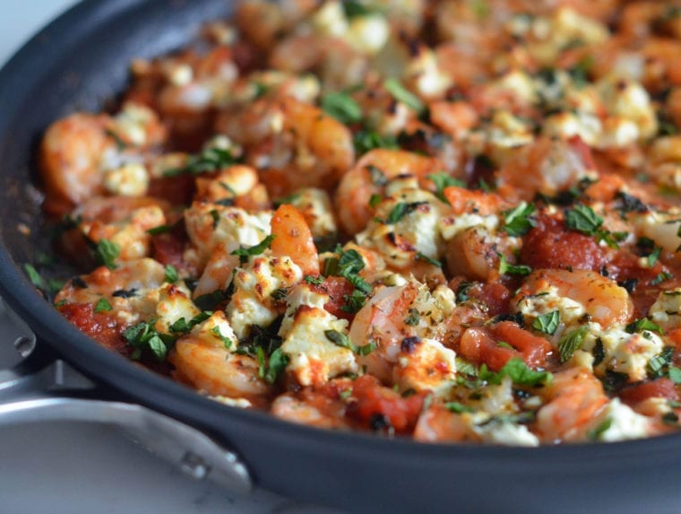

Dinner, potluck, feast, supper...whatever you call it, this meal is the main course of it all. In fact, the word "dinner" comes from the Old French word "disnar", which means "breakfast". So maybe, just maybe, dinner MIGHT be as superior as
breakfast, in my opinion. However, if you're someone like me, cooking dinner was never my strong suit until maybe after 3-4 years of upset stomachs and half-eaten dinner plates. That's all about to change now though, I have complied three
- in the same categories seen so far, for different expertise levels - recipes that are for sure to get your next dinner party guests, or just your kids, rambling on about how excellent the food is. Fun fact, Deipnophobia is the fear of
dinner party conversations (if you're like me, just stuff your face in the food, and you'll avoid all of that, aha!). Without further ado, let's get into it!
A chef from the United Kingdom that epitomizes the best of the best, ranging from cuisine, hospitality, and a number of successfully owned restaurants internationally. After finishing school, Ramsay began his humble beginnings by apprenticing with Marco
Pierre White, a master chef of his time. Holding a record of multi-Michelin stars, chef Ramsay places an immediate emphasis on providing tasteful prestige, and innovation on his recipes that extinguishes him from many other restaurants
and homemade establishments. He became a celebrity chef as he hosted the famous Hell's Kitchen, Kitchen Nightmares UK and USA, Hotel Hell, Gordon Ramsay's 24 Hours to Hell and Back, and co-hosted MasterChef. In those shows, Ramsay is known
for his profanity and constructive criticism that could help chefs become masters at their crafts. Recently, Ramsay aims to do what he does best: teaching everyone online through Masterclass, Youtube, and Cookbooks about his prestigious
recipes and cooking style.
Ingredients
Eggplant "Steaks":
2 eggplants, stems trimmed (about 12 ounces each)
1 tbsp. cumin seed
1 tbsp. brown mustard seed
1 tbsp. peppercorn medley
1/2 tsp. dill seed
3 tbsp. granulated garlic
4 tsp. onion powder
2 tbsp. smoked paprika
4 tsp. onion powder 2 tablespoons smoked paprika
2 tsp. mushroom powder
1 tablespoon dried rosemary (thyme or combination of both)
Steakhouse Red Wine-Glazed Mushrooms:
4 ounces trumpet mushrooms, trimmed and sliced (maitakes/oysters are great as well)
Extra-virgin olive oil
2 ounces shiitake mushrooms, sliced into bite-sized pieces
2 tablespoons vegan butter, divided
2 tablespoons minced shallot
2 garlic cloves, finely minced
1/3 cup red wine
1/2 cup mushroom stock
Reasonable amount of cracked black pepper
Splash of vegan worcestershire sauce (optional)
A pinch of fresh picked thyme
Creamy Roasted Garlic Mash:
6 Yukon Gold potatoes, peeled and diced (about 2 pounds)
Kosher salt and freshly ground black pepper, to taste
4 tablespoon vegan butter
1/3 cup vegan cream or plant-based milk
2 roasted garlic cloves, smashed
Sliced chives, for serving (optional)
Directions
Start by preheating the oven by 400˚F (204.4°C) and prepare the ingredients of "Eggplant Streaks" by charring the each side of the eggplants on the gas stove's heat and set it aside while it's covered with a wrap until it is relatively cool. Once cool,
peel the skins, discard, and season it with the "steak rub" and salt. Roast it in the oven for 30-45 minutes.
To make the "steak rub", combine large saute pan toast cumin seed, mustard seed, peppercorn medley, and dill seed under medium-low heat until ready and place them in a spice grinder.
Prepare Steakhouse Mushrooms, pour a tablespoon of olive oil on a skillet pan, heating trumpet mushrooms until golden, and season it with salt. Another mushroom to add is Shiitake, repeat the process, and slightly tender. Add alongside butter (half),
garlic, salt, pepper, and deglaze it with wine. Finally, pour the stock, simmer and whirl it until the pan is compressed halfway.
Preparing Creamy Garlic Mash. In a pot filled with cool water, add the potatoes. Boil and season it with salt lightly until ready to simmer and tender. In another pot, simmer for 3-5 minutes the melted butter and cream with garlic cloves. Then, mash the
potatoes until smooth and fold it with cream and salt and pepper seasoning.
In the meantime, add a little oil and couple cut tomatoes in a large pot under high-heat. Sear, and cook until caramelized and then slowly. Slow wilt for a few minutes. Then add the onions and keep cooking for around 10-20 minutes until tender and golden
brown. Add the tomato paste, have it toasted for about a minute. Until then, glaze it with wine until completely simmered. At the sametime, scrap roasted vegetables, add wine, kombu, bay leaf, peppercorns, and rosemary, and let it
boil and slowly simmer for 45 minutes to 1 hour. Incorporate liquid aminos, salt and pepper for the seasoning portion.
Finally, spoonful lay creamy mashed potatoes on the bottom and place the steak on the top, finalizing it with glazed mushrooms around the steak. Bon Appétit.
Restaurant Style
2. Sweet & Spicy Roast Chicken with Carrots, Dates & Pistachios , Jen Segal
Jenn has done it again! It's no surprise that I am a massive fan of her (I review her dishes the most, aha!). She offers wonderful and hearty family-friendly recipes that not only please your taste buds but your time and bank too. I was always a desert
person, that's where most of my expertise came into play, so dinner was always a "mom" or "sister" task. Last Family Day, I had the honour of hosting dinner at my house. Which meant I also had to do all the cooking and prepping. Not so
good news. Chicken is hard to go wrong with, so it was just a matter of a few minutes before my google's search history was populated with "easy chicken dinners", "chicken recipes for starters", or my personal favourite "home-cooked chicken
takeout". I came across Jenn's recipe and immediately fell in love with its simplicity and excellent reviews. This one will for sure leave you feeling like you can take on Gordon Ramsey himself.
Ingredients
1 tsp. lemon zest
3 tbsp. freshly squeezed lemon juice (large lemon)
1 tsp. orange zest
6 tsbp. freshly squeezed orange juice (2 oranges)
6 tbsp. extra-virgin olive oil
3 tbsp. whole grain mustard
6 tbsp. honey
1/2 tsp. crushed red pepper flakes
3 cloves garlic, roughly chopped
1 tbsp. fresh thyme leaves
2.5 tsp. salt
4 pounds bone-in chicken pieces (thighs, drumsticks and breasts)
3 cups 1/4 - inch sliced carrots
1 medium yellow onion, halved and thinly sliced
1 cup thinly sliced dried dates
2 tbsp. chopped Italian parsley (garnish)
2 scallions, light and dark green parts, thinly sliced (garnish)
1/4 cup chopped salted pistachios (garnish)
Directions
Preparing marination bag: whisk lemon and orange zest and juice, olive oil, mustard, honey, red pepper flakes, garlic, thyme, and salt. Then add the chicken, carrots, onions, and dates all contained into one plastic bag (filled with marination) and leave
it hanging in the fridge for around 6 hours to avoid any leaks.
Preheat the oven to 425°F (218°C), begin by placing the "marination bag" and place the ingredients inside to a rimmed sheet pan. Be sure that the chicken's skin is turned side up.
Roast the ingredients inside the bag for about 40 to 45 minutes until brownish gold colour. Finally, serve the chicken, carrots, onions and dates onto 4-6 platters. From here is sprinkled garnish: parsley, scallions and pistachio nuts. Enjoy!
Home Style
3. Greek Shrimp with Tomatoes & Feta , Jen Segal

Another day, another Jenn recipe. I feel like it's essential to have a variety of options when it comes to dinner. I have offered my take and reviews on dinner recipes that are both vegetarian, and well, meat lover edition. However, let us throw one out
there for all my fellow pescatarian food lovers. This recipe calls for shrimp with tomatoes and feta. First of all, who isn't a fan of a good tomato and feta fix? It is to die for! Now combine that with greek shrimp nestled in the beautiful
sauce and saltiness of the cheese. I might as well be prepping you for the ultimate food coma. You can also add spaghetti, rice, or steamed greens to this recipe (although even on its own, it's still a big hit!). This is one of my go-to
recipes because it's super quick and very low-maintenance, and the smell alone is enough to get your mouth watering.
Ingredients
4 tbsp. extra-virgin olive oil
3/4 cup finely chopped shallots (3 shallots)
4 garlic cloves (chopped)
1 (28-oz) can diced tomatoes
1-1/2 tsp. salt
1/4 tsp. pepper
1 tsp. ground cumin
1/2 tsp. crushed red pepper flakes
1 tbsp. honey
1-1/2 pounds extra large shrimp (26/30), peeled and deveined, thawed if frozen
6 ounces feta cheese
3/4 tsp. dried oregano
2 tbsp. roughly chopped fresh mint
Directions
In a skillet pan, heat olive oil under medium-low heat and at the sametime add the shallots and garlic and until it all softens, continue to cook and stir for about 5 to 7 minutes. Then add the tomatoes (juice), salt, pepper, cumin, red pepper flakes,
and honey, boil, and continue to reduce the heat and stir 15 to 20 minutes until the sauce is thickening. Preheat the oven to 400°F.
Turn the heat off, begin arranging your shrimp all over the tomato sauce, whie crumbling feta cheese over the shrimp with a garnish (oregano). Continue to bake for 12 to 15 minutes until the shrimp is pink in colour.
Note: wear oven mitts. Place the pan into a high oven rack and broil for 2 minutes. Until the feta brown is gold brown, remove it, and let the shrimp rest for 5 minutes. Bon Appétit!